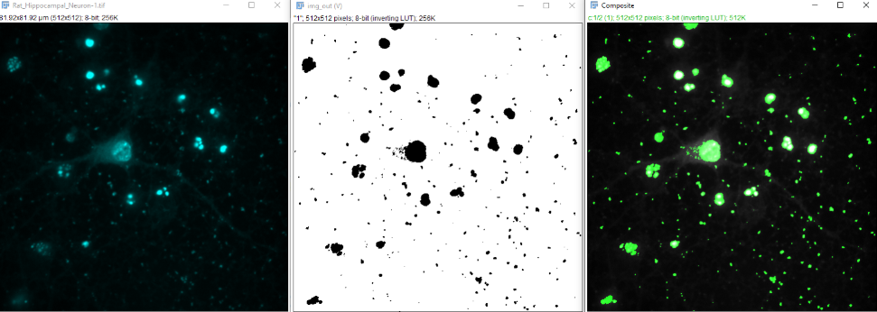
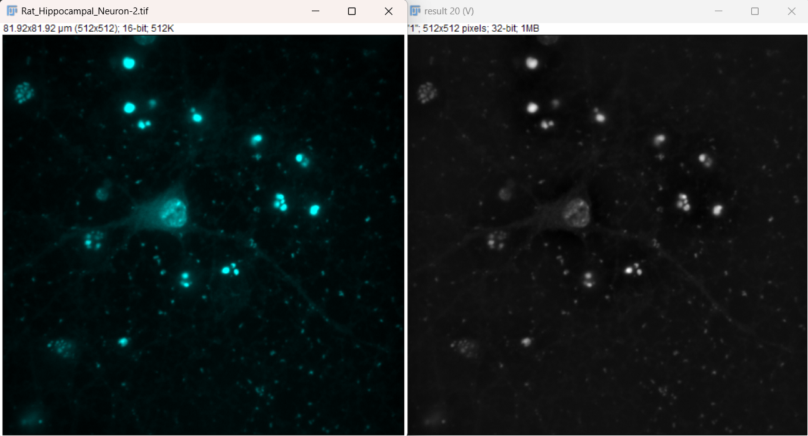
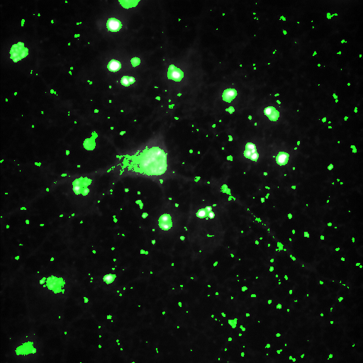
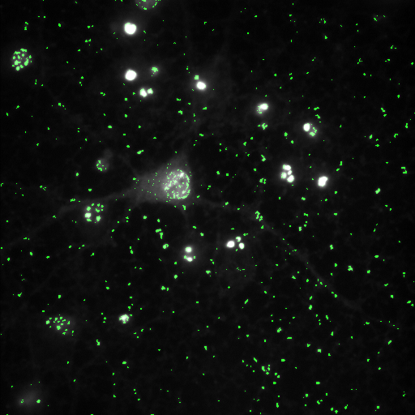

Background Subtraction – Gaussian Filters#
Performing background subtraction with a Gaussian filter can be an effective method of resolving objects from a noisy background. More info here: https://bioimagebook.github.io/chapters/2-processing/4-filters/filters.html#gaussian-filters

Background Subtraction - Gaussian filters Performing background subtraction with a gaussian filter can be an effective method of resolving objects from a noisy background. More info here: https://bioimagebook.github.io/chapters/2-processing/4-filters/filters.html#gaussian-filters
Use File > Open Samples > Neuron (5 channel) to open the starting image. We only want one channel to work with, so right click and duplicate channel 4.
Try a variety of thresholds on this image, including the triangle method. Here we will try to improve this threshold by separating out the smaller point-like structures.
Open the gaussian subtraction script found here, developed by Ed Evans:
(Download raw file in GitHub.)
Open this in Fiji to open the Macro Editor, or open the Macro Editor via Plugins > New > Macro
This script is written in python, so be sure to change the macro language to python before running, otherwise an error will be produced:

With the single channel image highlighted, run the script. You should be prompted to input a sigma value for the gaussian filter. Larger values will blur out larger and larger objects. For this example, use 20 and then use 1. Feel free to try a variety of values to see how the results change.

After running the script, we now see that some structures are highlighted a bit differently in result (V) (notice how the cell body is harder to see)
Some structures are highlighted differently.
The cell body may be less visible, while smaller axons or dots stand out more.

After running the script, we now see that some structures are highlighted a bit differently in
result (V)(notice how the cell body is harder to see):


If we decide this mask is sufficient for our data, we can then apply the mask to the output image and merge the display. a. With the output image still selected, choose Apply on the threshold window, while making sure the dark background box is selected. It then will ask you to convert the output to an 8-bit mask. i. The areas of interest should now have values of 255 while the background has a value of
0. If this is inverted, it is likely that the dark background box in the threshold window was not selected, you can simply use Edit > Invert to switch the values. b. To overlay the mask on the original image, we can make a composite. This requires that the original image is also converted to 8-bit for display. Use Image > Type > 8-bit
c. To make the composite, use Image > Color > Merge Channels. Here, I will set the original channel duplicate to C4 (gray) and the mask to C2 (green). This should procedure the following composite image, that can be used for display:

d. As an additional display, we could use Edit > Selection > Create Selection on the mask image, then Edit > Selection > Restore Selection on the original image to get outlines of the mask.
If we use a sigma value of 1 and repeat the process, we can see there a further differences in the cell body and other structures, although this seems to also pick up more noise:
